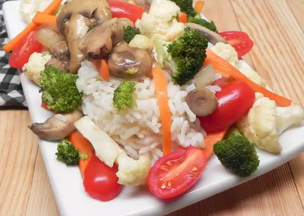

Home
Stir Fry

Description
Easy vegan stir-fry recipe
Ingredients
- 1 small onion, diced
- 2 tablespoons canola oil
- 1 clove garlic, diced
- ½ cup diced carrots
- ½ cup chopped cauliflower
- ½ cup chopped broccoli florets
- ½ cup sliced fresh mushrooms
- ¼ cup soy sauce
- ¾ cup water
- 1 tomato, diced
- 1 tablespoon chopped fresh basil, or to taste
- salt and ground black pepper to taste
- ¼ cup unsalted sunflower seeds (Optional)
Steps
- Combine onion, canola oil, and garlic in a large skillet.
- Cook over medium-high heat for 4 minutes.
- Add carrots, cauliflower, broccoli, and mushrooms one at a time with 2 minutes between each.
- Pour in soy sauce and stir to coat. Cook for 2 minutes more.
- Add water, tomato, basil, salt, and pepper.
- Bring to a boil; reduce heat and simmer until vegetables are fork-tender but not soft, about 5 minutes.
- Sprinkle with sunflower seeds.